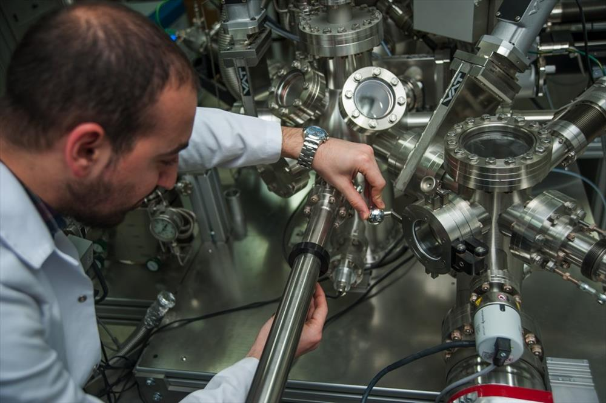
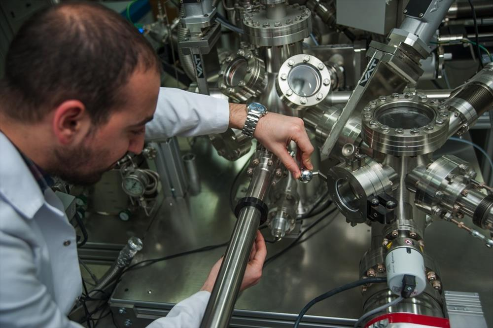

Application for Transfer with Central Placement Score 01-15 August 2021
August 31, 2021 Deadline for Special Student Application of Other Higher Education Institution Associate/Undergraduate Students
September 03, 2021 Minor to Undergraduate Programs; Deadline for Acceptance of Double Major, Intra-Institutional Transfer and Inter-Institutional Transfer Applications to Associate/Undergraduate Programs
Announcement of Students Accepted for Transfer on September 04, 2021 with Central Placement Score
04-08 September 2021 Electronic Registration Date of Students Placed in Eskişehir Technical University by ÖSYM
September 06-10, 2021 Registration Date of Students Placed in Eskişehir Technical University by ÖSYM
September 07, 2021 Undergraduate Programs Minor; Announcement of Main and Substitute Candidate Lists for Associate/Undergraduate Programs for Double Major, Internal Transfer and Inter-Institutional Transfers
September 07-10, 2021 Undergraduate Programs Minor; Registration of the Main Candidates for Double Major, Internal Transfer and Inter-Institutional Transfer to Associate/Undergraduate Programs
Registration of Students Accepted for Horizontal Transfer with Central Placement Score 08-15 September 2021
September 13-16, 2021 Undergraduate Programs Minor; Substitute Candidate Registrations for Associate/Undergraduate Programs for Double Major, Internal Transfer and Inter-Institutional Transfers
September 23, 2021 Deadline for Application for Exemption from Compulsory Foreign Language Courses (for students continuing their education)/Deadline for Application for Exemption from Basic Computer Courses
September 27 - October 1, 2021 Foreign Language Proficiency Exam
September 27- October 01, 2021 Registration Renewal and Registration Confirmation
September 27, 2021 Exemption Exam from Foreign Language Courses
October 4, 2021 Foreign Language Placement Exam
October 04, 2021 Beginning of Classes
04-08 October 2021 Add‒Delete Week/Orientation Week
28-29 October 2021 Republic Day Holiday
November 01, 2021 Deadline for Withdrawal (For Associate and Undergraduate Students)
MID EXAMS Starting from the Fall semester of the 2020-2021 Academic Year, the dates of the midterm exams will be determined and announced to the students by the relevant unit's board of directors for department/program courses and by the board of directors of the relevant units for common courses.
November 20-21, 2021 Midterm Exams for Institutional Common Courses
December 29, 2021 Deadline for Submission of Midterm Exam Grades.
01 January 2022 New Year's Eve
Make-up Exams for 03-07 January 2022 Midterm Exams
January 12, 2022 End of Courses Midterm Exam Make-up Exam Grades and Other (Homework, Practice, etc.) Deadline for Submission of Grades for Midterm Evaluations
January 17-28, 2022 Final Exams
January 31, 2022 Deadline for Submission of End of Term Letter Grades
February 02-04, 2022 Make-up Exams/End-Semester Make-up Exams for Courses Without Make-Up Exams
02-04 February 2021 Foreign Language Proficiency
February 07, 2022 Deadline for Submission of Letter Grades for Make-Up Exams and Letter Grades for the End of Term Make-Up Exam for Courses without Resit Examination Rights
February 08-10, 2021 Foreign Language Proficiency Exam Make-Up (For Students Who Have Failed the Proficiency Exam after meeting the necessary prerequisites to take the Proficiency Exam at the end of the Fall Term)
COMMUNICATION
Compensation for Thursday, October 28, 2021 is Monday, January 10, 2022
Compensation for Friday, October 29, 2021 on Tuesday, January 11, 2022
Make up for Saturday, January 1, Wednesday, January 12, 2022
ADDITIONAL EXAMS
February 08-10, 2022 Additional Exams for Undergraduate and Associate Degree Programs
January 24, 2022 Deadline for Special Student Application of Other Higher Education Institution Associate/Undergraduate Students
February 01, 2022 Minor to Undergraduate Programs; Double Major, Internal Transfer to Associate/Undergraduate Programs, Transfer with Central Placement Score; Deadline for Acceptance of Inter-institutional Transfer Applications to Associate Degree Programs
07-09 February 2022 Undergraduate Programs Minor; Double Major, Internal Transfer to Associate/Undergraduate Programs, Transfer with Central Placement Score; Announcement and Registration of Principal Lists for Inter-institutional Transfer to Associate Degree Programs
08-10 February 2022 Foreign Language Proficiency Exam
February 10-11, 2022 Undergraduate Programs Minor; Double Major, Internal Transfer to Associate/Undergraduate Programs; Announcement and Registration of Substitute Candidate Lists for Interinstitutional Transfer to Associate Degree Programs
February 11, 2022 Deadline for Application for Exemption from Compulsory Foreign Language Courses (For students continuing their education)
February 14-18 2022 Registration Renewal and Registration Confirmation
February 15, 2022 Exemption Exam from Compulsory Foreign Language Courses
February 21, 2022 Foreign Language Placement Exam
21 February 2022 Beginning of Classes
21-25 February 2022 Add‒Delete Week
March 18, 2022 Deadline for Withdrawal (For Associate and Undergraduate Students)
MID EXAMS Starting from the 2021-2022 Academic Year Fall semester, the dates of the midterm exams will be determined and announced to the students by the relevant unit's board of directors for department/program courses and by the board of directors of the relevant units for common courses.
02-03 April 2022 Midterm Exams for Institutional Common Courses
April 23, 2022 National Sovereignty and Children's Day Holiday
May 01, 2022 Labor and Solidarity Day Holiday
*** (To be determined according to pandemic conditions.) Spring Walk
May 02-04, 2022 Ramadan Feast Holiday
May 05, 2022 Deadline for Submission of Midterm Exam Grades
May 09-13, 2022 Make-up Exams for Midterm Exams
May 19, 2022 Commemoration of Atatürk, Youth and Sports Day Holiday
June 03, 2022 End of Courses Midterm Exam Make-up Exam Grades and Other (Homework, Practice, etc.) Deadline for Submission of Grades for Midterm Evaluations
06-17 June 2022 Final Exams
June 20, 2022 Deadline for Submission of End of Term Letter Grades
June 22-25, 2022 Make-up Exams/End-Semester Make-up Exams for Courses Without Resit Exams
June 28, 2022 Deadline for Submission of Letter Grades for Make-Up Exams/ Deadline for Submission of Letter Grades for the End of Term Make-Up Exam for Courses without Resit Examination Entitlement
June 29-July 1, 2022 Foreign Language Proficiency Exam (For Students Who Meet the Prerequisites for Taking the Proficiency Exam at the end of the Spring Term)
05-07 July 2022 Foreign Language Proficiency Exam Make-Up (For students who fail the proficiency exam after meeting the necessary prerequisites to enter the Proficiency Exam at the end of the Spring Term)

 
